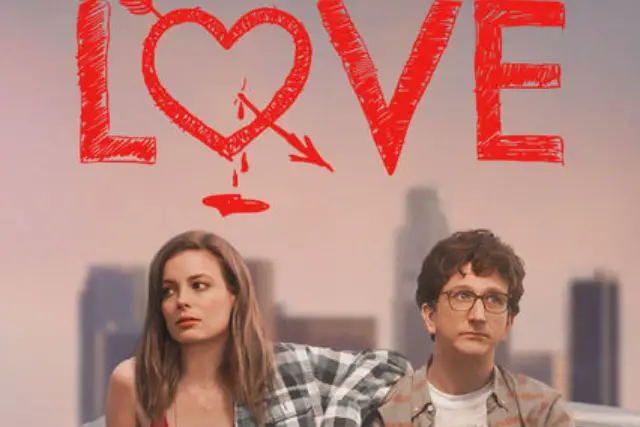

Resenha: “Love”, 3 temporadas e muita lição emocional

Relacionamentos são complicados, mas podem ser simples. O amor é uma droga que vicia e substitui qualquer outro vício por ser algo bom e liberar bem mais endorfinas que qualquer coisa. E apesar dos muitos tropeços que a vida dá, ter alguém para compartilhar os seus momentos, é algo alucinante. E é isso que a série “Love”, da Netflix nos mostra.
São apenas três temporadas, mas com cenas, situações e desfechos de tirar o fôlego. Se você já teve ou tem um relacionamento amoroso, provavelmente já passou por muitas dessas fases (esperamos que não todas), mas as fases mais corriqueiras da maioria dos relacionamentos são mostradas nessa série.
O dia a dia ao lado de alguém gera frutos. Quando se entra de cabeça em um romance sério, é na vivência da rotina que acabamos conhecendo os passos daquela pessoa com a qual nos envolvemos. Seus vícios, suas artimanhas, sua personalidade, suas fraquezas, entre muitas outras coisas só podem ser desvendadas de uma única maneira: convivendo à fundo.
A série é de Judd Apatow com produção da própria Netflix, e resume-se em três temporadas, o que deixou a série ainda mais avivada. Talvez tenha sido cancelada por pouco alcance, mas nesse post vamos mostrar uma visão diferente, por que você deveria se entregar aos lances e charmes de “Love”?
A PARTIR DAQUI VOCÊ PODE SE DEPARAR COM SPOILERS.
Se conhecem ao acaso Mickey e Gus, uma moça excêntrica e o típico nerd. Duas pessoas que na verdade são mais complicadas do que parecem. A história mostra o decorrer do relacionamento desses dois protagonistas e as confusões envolvidas entre eles. O amor é mútuo, mas a presença da solidão que habitava cada um é notável.
Mickey é uma viciada em álcool, cigarros e sexo, que passa a maior parte das três temporadas tentando conter seus vícios, mas é na terceira temporada que ela se encontra mais sóbria e assim podemos ver que por trás daquela garota desajuizada e socialmente não aceita, existe uma mulher madura e empenhada em sua carreira em uma rádio.
Gus é um “cara legal”, ao menos ele tenta ser, aspirante a roteirista ele apenas consegue focar seu rumo sendo professor de adolescentes em um set de filmagem. Faz muito para agradar a todos, mas tem seus surtos internos e quando eles resolvem explodir, não há quem segure. Porém esse é um lado que ele tenta esconder piamente.
De início encara-se a série como uma comédia dramática, após alguns episódios percebemos que há mais realismo e que ela pode ser algo sério, que usa o humor para que possamos entender o ciclo de amar e o quão complicado isso pode ser. A primeira temporada não é sobre um relacionamento sério, mas sobre dois jovens desbravando as decisões do que realmente querem ser e escondendo seus medos.
Dois seres distintos que criam uma conexão absoluta. Enquanto ela parece descolada e tem mil e um problemas de auto estima, ele parece agradável e compreensivo e tem mil e uma esquisitices para contar. Seria o casal perfeito em uma comédia romântica moderna, o diferencial se encontra que em comédias românticas tudo é muito mais colorido, em “Love” o humor é ácido, quase destrutivo, nos fazendo odiar os personagens muitas vezes.
A série se resume em: muitos sonhos, poucas iniciativas para realizá-los e uma onda de infinitos problemas que parecem nunca terminar. Personagens que mesclam carisma com complexidade, não apenas o casal protagonista, mas todos. Tanto que na terceira temporada outros personagens ganham episódios destaques, mostrando as situações alheias à Mickey e Gus.
No decorrer dos episódios, podemos destacar alguns fatos: Inicialmente Gus parecia ter mais interesse em um relacionamento sério do que a problemática Mickey, mas com a vivência entre os dois o comprometimento cresce indiscutivelmente. Mickey chega até mesmo a dar “barraco” no trabalho de Gus, como uma selvagem namorada, mesmo que nessa época eles ainda não tivessem fixado um título ao que realmente eram um do outro.
Como um reflexo do abismo em que se encontram, resolvem “ir devagar”, se conhecer aos poucos, mostrar seus defeitos e tentar corrigi-los (mas afinal qual o defeito que sustenta nosso edifício?). O impasse entre eles acontece quando Gus precisa viajar a trabalho, a jovem Arya, que é a principal aluna destaque dele desde a primeira temporada, irá viajar na gravação de um filme e seu professor precisa ir junto, para garantir que ela não perca suas aulas.
Mickey acredita que não saberá lidar com a distância, chega a assumir isso para Gus que promete ser o mais presente possível, telefonar todos os dias, várias vezes ao dia, ele parece estar sendo forte em mantê-la segura. Mas ao realmente encarar essa viagem “de negócios” as coisas parecem mudar.
É partir desse momento que Mickey começa a ter seu espaço e se dedicar a abandonar seus vícios e se entregar ao trabalho, parece amadurecer por um lado, mas falha por outro. Ao reencontrar um ex-namorado do passado, ela acaba tendo uma relação flashback melhorada com ele, seria traição?
Talvez pudéssemos não considerar traição se formos ver que ela e Gus não tinham estabilizado um nome à sua relação, mas em contrapartida antes que ele partisse ela o fez prometer que mesmo ausente ele se faria presente, ele assim o fez, tentou estar presente via ligações ou que quer que fosse, ao máximo, mas ela parecia estar sempre muito ocupada.
Nessa hora o jogo virou, Gus se tornou o cara solitário e necessitando de atenção urgentemente, mas não procurou deleitar-se sobre outra mulher, ele foi firme, mesmo depressivo e sozinho, apesar de ter qualquer oportunidade de fazer algo que ela nunca descobriria, esteve firme em não ficar com outra pessoa, enquanto Mickey frequentava diariamente a casa do ex. Isso nos faz remeter a uma situação de infidelidade.
Sabe o que mais revolta no término dessa situação? Quando Gus está retornando de sua viagem de um mês totalmente abalado, acreditando que não conseguiria nada de mais concreto com Mickey, ela se arrepende do feito, faz seu ex voltar a ser ex e corre para os braços de Gus, assumindo que quer algo pleno, sério e exclusivo com ele. Claro que ele aceita, isso sim é um tiro no pé meus caros, porque esse único fato afeta nossa visão para a terceira temporada inteira.
Na terceira e última temporada enxergamos novas perspectivas, Gus resolve tentar colocar em prática um roteiro de suspense erótico escrito por ele, muita coisa dá errado nesse processo de criação, mas ele finge sempre estar tudo bem. Não apenas nessa situação, mas em várias outras, ele mente, manipula situações, parece nunca querer incomodar ninguém, mas no fim ele apenas quer parecer o cara perfeito.
Quando ele realmente se assume, não apenas para Mickey, mas para seus amigos e família, mostra o quanto atolado à lama ele está, é que as coisas parecem melhorar. Surge uma proposta para participar como roteirista em uma nova série, o que será um grande passo em sua carreira e a única vez em que parece que isso dará finalmente certo. Nisso aprendemos que talvez seja um tapa do destino, precisamos nos assumir e aceitar para depois corrigir nossa rota.
Enquanto Mickey já está estabilizada em sua carreira e apenas crescendo cada vez mais, consegue se ver longe do vício em bebidas, evitando recaídas, mas sendo julgada algumas vezes. Essa temporada nos faz nos apegar mais a personalidade dela, como se ela tivesse crescido emocionalmente. Uma facada no peito se recordarmos que ela não irá contar a Gus sobre sua suposta traição.
O desfecho não poderia ser mais romântico, eles resolvem se casar em um lugar paradisíaco, com apenas seus amigos mais próximos, aqueles que nos fazem rir em muitas situações durante toda a série. Algumas coisas acabam dando errado e o casamento quase adiado, quase, mas surpreendentemente as coisas acontecem como devem acontecer, não é mesmo?
Se a série fosse algo convencional, eles não brigariam tanto, Gus descobriria de forma trágica sobre Mickey ter ficado com outra pessoa em sua ausência, eles teriam alcançado o auge de suas carreiras bem antes, Mickey se livraria até mesmo do vício de fumar (ela até tenta, mas sem êxito), entre outros fatos que se distorcem e nos fazem enxergar que nem tudo é o certo, nem nunca vai ser, mas o amor definitivamente muda as pessoas, na maioria das vezes para melhor.
Se um dia ele vai descobrir sobre a traição? Não sabemos, e é isso que faz a diferença, também não sabemos como ele irá reagir caso isso aconteça, nos privaram de um fato importante para nos darem uma celebre lição: o que vai acontecer não é da nossa conta, é deles. Não devemos dar palpites, quem constrói e destrói pontes em um relacionamento são apenas as pessoas que devem realmente estar envolvidas nele, nesse caso: Mickey e Gus.
Nos apegamos a eles como personagens complicados que tentam descomplicar suas vidas juntos. Aquela Mickey que traía, bebia e era uma preguiçosa profissional cresceu graças ao Gus. Aquele Gus que mentia sobre seus problemas, surtava pelos cantos sozinho e era inseguro sobre si, melhorou graças à Mickey (embora ele tenha demorado mais).
Disso tudo tiramos uma lição: O amor faz tudo valer a pena. “Love” não é apenas para rir ou chorar, é para refletir sobre os relacionamentos e suas diversas formas de demonstração. Uma série que se aprofunda muito mais do que realmente pensamos e mostra todas as faces do amor, o verdadeiro e mais puro e singelo amor. E como é bom descobri-lo ao lado de alguém que caminha em nossa frequência.